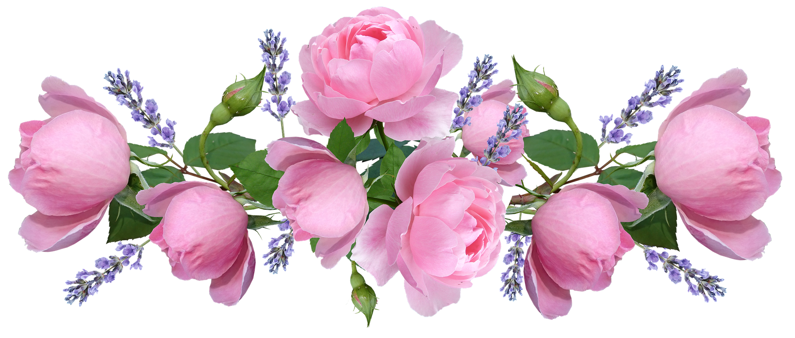

Что символизирует цвет лепестков:
Окраска лепестков — одна из основ цветочного языка. Еще в эпоху Екатерины Великой был создан «Реестр о цветах», где подробно расписывалось значение каждого цвета. Трактовки, которые применялись в галантном XVIII веке, практически в неизменном виде сохранились до наших дней.
- Белый: невинность, искренность, чистота.
- Розовый: юность, нежность, очарование, забота.
- Желтый: радость, тепло, душевность, жизнелюбие.
- Оранжевый: гордость, сила, энтузиазм, уверенность в будущем.
- Красный: пылкая любовь, страсть, свобода.
- Синий и голубой: тайна, спокойствие, преданность, высота чувств.
- Фиолетовый: доверие, дружба, поэтическое вдохновение.
Язык цветов — дитя Востока. Обычаи этой части света запрещали женщинам общаться с мужчинами, если их не связывали узы брака, и, чтобы выразить друг другу свои чувства, влюбленные придумали «цветочную переписку». Со временем традиция попала в Европу, где остается популярной и сейчас.
Как дарить цветы:
- Юным девушкам традиционно дарят белые ландыши, лилии, орхидеи с полураскрывшимися бутонами. Если вы в поиске букета для дочери, выберите бледно-розовые чайные розы или герберы. Если для возлюбленной – закажите композицию из алых роз. Альтернативой станут композиции из колокольчиков, пеларгоний, пышных осенних астр.
- Любовь и благодарность самой родной женщине — маме — помогут выразить фрезии, альстромерии, мелкие кустовые розы. Прекрасно передают теплоту чувств композиции из садовых и полевых цветов — ноготков, лаванды, лилейника.
- Свекрови уместно подарить элегантный букет из чайных роз, лотосов или эпигей, а бабушке — композицию из желтых тюльпанов и фиалок. Запомните: женщинам в возрасте вручают цветы со спокойной и сдержанной окраской лепестков — розовой, персиковой, бледно-желтой, голубой.
- Идеальные варианты для сестры — горицветы, маргаритки, желтые каллы или плюмерии. А если вы захотите порадовать подругу, преподнесите ей букетик из ирисов, ромашек или хризантем.
- Коллегам по работе дарят композиции из лютиков, магнолий, белого жасмина. Для вручения сослуживцам также подходят нарциссы, камелии и гиацинты.
- А какие цветы будет уместно подарить мужчине? Сослуживцу или деловому партнеру можно вручить строгую композицию с дельфиниумами или гладиолусами, брату или приятелю — задорные подсолнухи, а отцу или мужу — розы с темной окраской лепестков, гвоздики, ирисы.
| Кол-во цветков в букете |
Значение |
| 1 |
приглашение пофлиртовать |
| 3 |
радость, искренность чувств |
| 5 |
признание в любви |
| 7 |
обожание, предложение руки и сердца |
